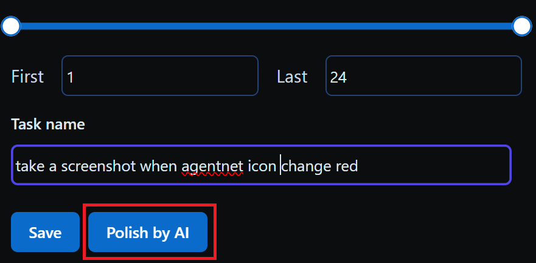
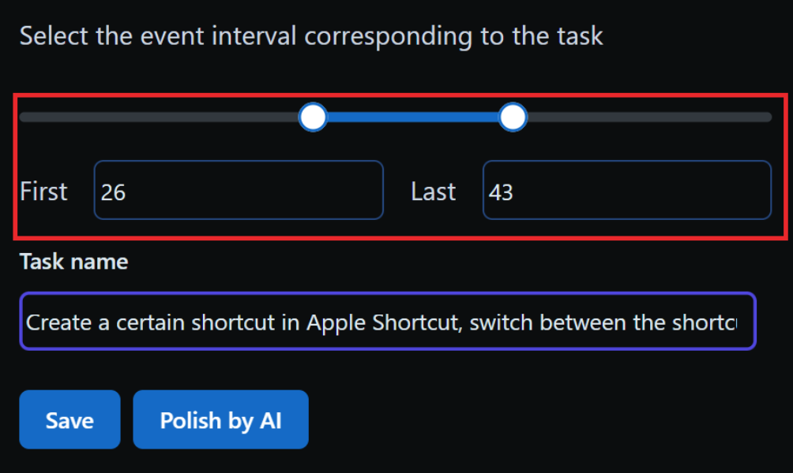
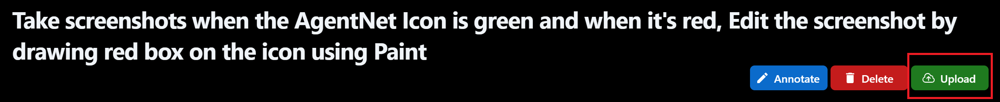

Annotation Pipeline¶
Make sure installation and stetup has been complete
Before reading the section below, make sure you have completed every step in the installaton section for Windows and MacOS
Annotation Pipeline Overview¶
Annotation Pipeline contains 5 steps:
- Step 1: Open OBS and login AgentNet
- Step 2: Record a task using AgentNet tool
- Step 3: Review the recorded task
- Step 4: Write task description
- Step 5: Upload the task (we cannot see your annotated task until it's uploaded)
Privacy
AgentNet Tool will capture your screen, mouse and keyboard activities, including browser and app content. You can annotate any computer tasks, but ensure that you only upload those without any personal data you prefer not to share. Your data cannot be previewed until it is uploaded.
Step 1: Open OBS and Login AgentNet¶
1.1 Open OBS and AgentNet Tool¶
1.2 Login to AgentNet using Google Account or provided login code¶
1.3 Check the OBS and AgentNet icon: If AgentNet icon is hidden, please move it to the visible place.¶
Step 2: Record a Task using AgentNet Tool¶
2.1 Start Recording: Whenever you have a task in mind (e.g. "Schedule a Zoom meeting with Junlin for next Monday"), click "Start Recording" and the AgentNet app window will be minimized automatically.¶
2.2. Demonstrate the task: You can operate your PC as normal (click, type, drag, scroll...) to complete the task, please avoid any unnecessary or irrelevant actions that are not related to the task.¶
2.3. Stop Recording: You can open the app and click "Stop Recording" once you finish the task, or use the hotkey "Ctrl+Shift+T" (Windows) / "Cmd+Option+T" (MacOS).¶
In the example task, the actions are: Open Schedule meeting in Zoom; Set up meeting time and participants; Create Google Calendar event.
- Pay Attention: The AgentNet will capture computer data during recording. Please don't move (click/type) when the icon is red (we are fetching the data at the moment)! Otherwise the collected task data will be incomplete!
Step 3: Review the Recorded Task¶
After processing, new recording will be generated below the "Local" sidebar, clicking on the recording to see the recorded task as shown below.
Review all captured actions on the right panel to ensure:
- Action match: Verify that the action in the video clip matches the corresponding action in the action list (Blue arrow in the above screenshot).
- Unnecessary actions: Delete redundant actions and keep only those essential for the task. Follow this Basic Rule: If the task cannot be completed without an action when repeated, keep it; otherwise, delete it.
Step 4: Write Task Description¶
After reviewing the recorded task, you need to click on "Annotate" button first, and then write down the natural language description of the task in the "Task name" field.
Basic Rule: Ensure that others can understand and replicate the task by reading the task description. Strive for a balance between being too abstract and overly specific.
Examples of good and bad task descriptions are provided to illustrate our expectations.
Good Examples
1. How can I display all attendees' videos at an equal size on Zoom?
2. Use Zoom to schedule a meeting with the XLANG team for the project update. Send the meeting invite to all team members by email
3. Create a sales report using Excel that includes data for Q1. Share the report with the sales manager via Google Drive.
4. Log in to WordPress and update the homepage banner to reflect the new promotion. Ensure to save changes and preview before publishing.
Bad Examples
1. Schedule a meeting and send it through email. (Vague about which platform to use and who the email should go to.)
2. Open Spotify and listen to the first song of my favourite singer. (Too personal; it doesn't specify which song or how to find it.)
3. Make some changes to the website. (Too ambiguous; doesn't specify what website and what changes)
4. Click on the website, click the project section, and change the text to "New Launch", take a screenshot, add the picture to the end. (Overly detailed)
Polish by AI (Advanced feature, not recommended)
- We provide a feature using AI to help you correct the grammar and format.
- Note: Please only use it when you feel there are many grammar errors. We need natural task desciptions in general, not all generated by AI. You should review the polished text and make sure it's correct before save.

Create a sub-task (Advance feature)
- If you record many different tasks in one recording, you can select the First and Last action, enter it's task description, then click "Save". Then this sub-task will be saved independently, you can check the new saved task from the sidebar.

Step 5: Upload the Task¶
We cannot see your annotated task until it's uploaded. Please make sure to upload it after finished by clicking "upload"!

Annotation Pipeline Tutorial Video (Optional)¶
Here's a tutorial video that walks through recording, reviewing and uploading steps mentioned above. Skip if you've already understood the instructions.